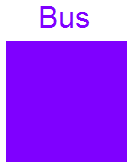

Modelica.Blocks.Examples.BusUsage.Interfaces.MultiPort
Modelica.Blocks.Examples.BusUsage.Interfaces.MultiPort

Defines connector for signalbus.
connector Bus "Signal bus" import SI = Modelica.SIunits; import Modelica.Blocks.Interfaces.*; RealPort realSignal1(redeclare type SignalType = SI.AngularVelocity) "First Real signal (angular velocity)"; RealPort realSignal2 "Second Real signal"; IntegerPort integerSignal "Integer signal"; BooleanPort booleanSignal "Boolean signal"; MultiPort multiSignal "Combined signal"; end Bus;
Modelica.Blocks.Examples.BusUsage.Interfaces.MultiPort

connector MultiPort "Combined port of real and boolean signal" Real myRealSignal; Boolean myBooleanSignal; end MultiPort;